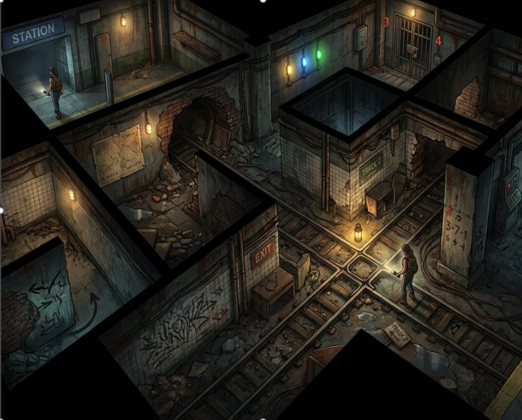
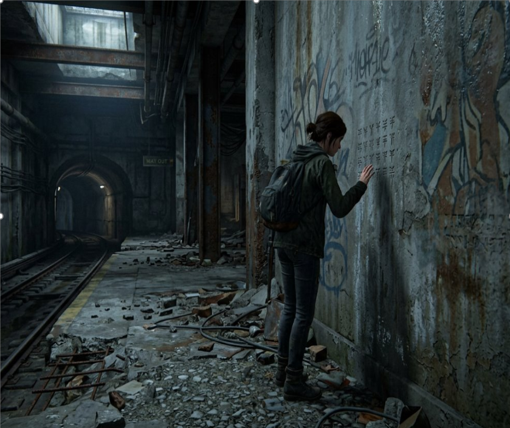
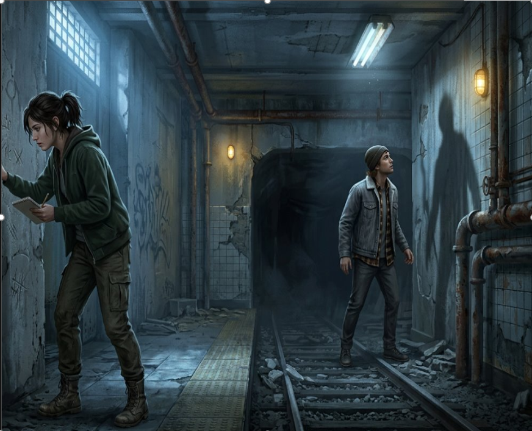
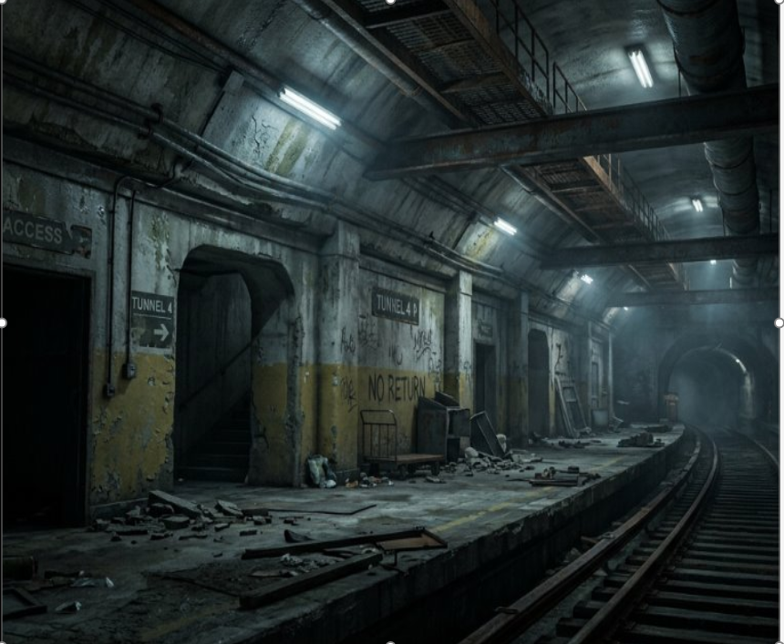
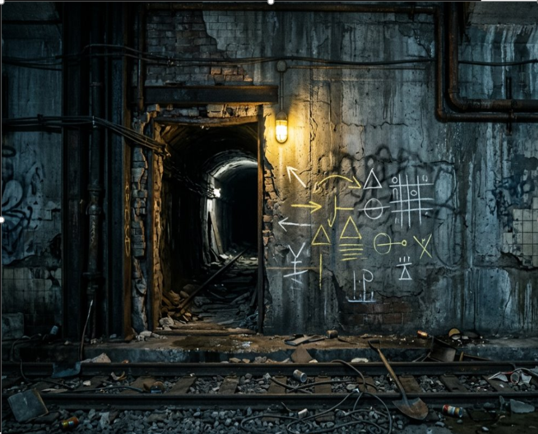
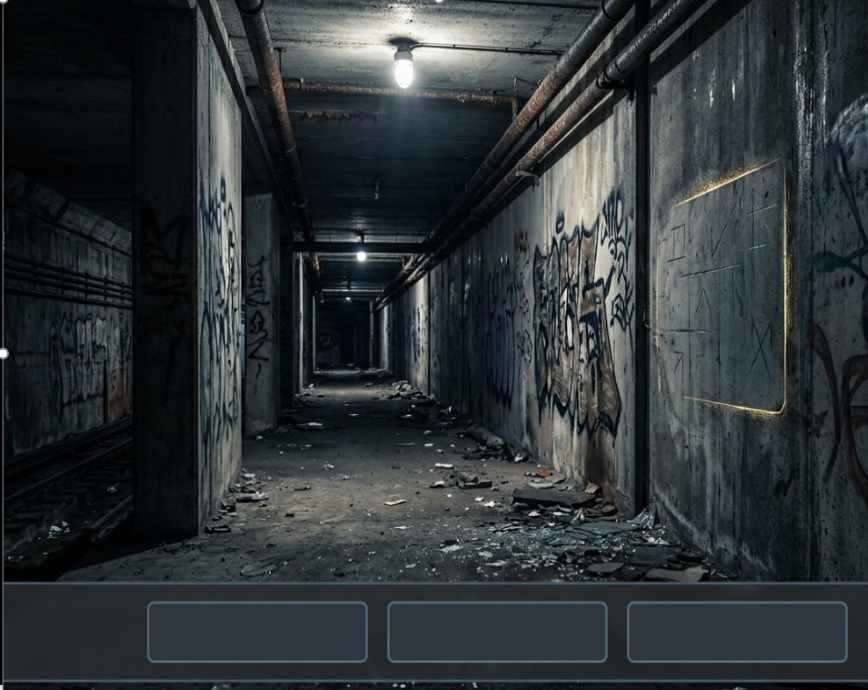

This section documents the development of Another Way, from the original concept and innovation claim to the design of its core gameplay mechanic and graduation prototype.
As the project develops this page will include planning materials, design documents, diagrams, concept art, and implementation progress.
The focus is on developing a small playable prototype that demonstrates how players guide different characters, discover useful information, and use persistent environmental
changes to solve a puzzle.
Concept Art
These images explore the visual direction of Another Way, including its eerie maze environment and the atmosphere inspired by abandoned subway tunnels. They help establish
the setting and mood for the game's exploration and puzzle solving.






Diagrams
This section will contain diagrams that explain how the core game mechanic works, including how environmental triggers affect the character's stress and how the character
can use a coping strategy to reduce it. The diagrams will help show the relationship between the game environment, the character's stress response, and the player's actions.